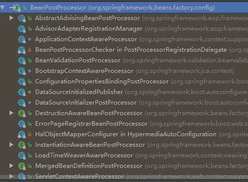

BeanPostProcessor接口是Spring中一个非常重要的接口，它的接口定义如下
public interface BeanPostProcessor {
Object postProcessBeforeInitialization(Object bean, String beanName) throws BeansException;
Object postProcessAfterInitialization(Object bean, String beanName) throws BeansException;
}当你实现了这个接口的时候，Spring会保证在每一个bean对象初始化方法调用之前调用postProcessBeforeInitialization方法，在初始化方法调用之后调用postProcessAfterInitialization
BeanPostProcessor的注册看过我之前写的IOC源码分析系列文章的同学应该对这个都比较有印象
Spring在执行到这的时候会把所有实现BeanPostProcessor接口的实现类都注册到BeanFactory中，一起来看一下实现的细节
protected void registerBeanPostProcessors(ConfigurableListableBeanFactory beanFactory) {
PostProcessorRegistrationDelegate.registerBeanPostProcessors(beanFactory, this);
}
public static void registerBeanPostProcessors(
ConfigurableListableBeanFactory beanFactory, AbstractApplicationContext applicationContext) {
//获取所有BeanPostProcessor的实现类
String[] postProcessorNames = beanFactory.getBeanNamesForType(BeanPostProcessor.class, true, false);
int beanProcessorTargetCount = beanFactory.getBeanPostProcessorCount() + 1 + postProcessorNames.length;
beanFactory.addBeanPostProcessor(new BeanPostProcessorChecker(beanFactory, beanProcessorTargetCount));
// 这里把实现PriorityOrdered接口,Ordered 接口的BeanPostProcessors 和其他类型的BeanPostProcessors 区分开
List<BeanPostProcessor> priorityOrderedPostProcessors = new ArrayList<>();
List<BeanPostProcessor> internalPostProcessors = new ArrayList<>();
List<String> orderedPostProcessorNames = new ArrayList<>();
List<String> nonOrderedPostProcessorNames = new ArrayList<>();
for (String ppName : postProcessorNames) {
if (beanFactory.isTypeMatch(ppName, PriorityOrdered.class)) {
BeanPostProcessor pp = beanFactory.getBean(ppName, BeanPostProcessor.class);
priorityOrderedPostProcessors.add(pp);
if (pp instanceof MergedBeanDefinitionPostProcessor) {
internalPostProcessors.add(pp);
}
}
else if (beanFactory.isTypeMatch(ppName, Ordered.class)) {
orderedPostProcessorNames.add(ppName);
}
else {
nonOrderedPostProcessorNames.add(ppName);
}
}
//对实现了PriorityOrdered接口的按优先级排序
sortPostProcessors(beanFactory, priorityOrderedPostProcessors);
//这里就是注册了，下面会说
registerBeanPostProcessors(beanFactory, priorityOrderedPostProcessors);
List<BeanPostProcessor> orderedPostProcessors = new ArrayList<>();
for (String ppName : orderedPostProcessorNames) {
BeanPostProcessor pp = beanFactory.getBean(ppName, BeanPostProcessor.class);
orderedPostProcessors.add(pp);
if (pp instanceof MergedBeanDefinitionPostProcessor) {
internalPostProcessors.add(pp);
}
}
sortPostProcessors(beanFactory, orderedPostProcessors);
//注册
registerBeanPostProcessors(beanFactory, orderedPostProcessors);
List<BeanPostProcessor> nonOrderedPostProcessors = new ArrayList<>();
for (String ppName : nonOrderedPostProcessorNames) {
BeanPostProcessor pp = beanFactory.getBean(ppName, BeanPostProcessor.class);
nonOrderedPostProcessors.add(pp);
if (pp instanceof MergedBeanDefinitionPostProcessor) {
internalPostProcessors.add(pp);
}
}
//注册
registerBeanPostProcessors(beanFactory, nonOrderedPostProcessors);
// 最后注册常规的
sortPostProcessors(beanFactory, internalPostProcessors);
registerBeanPostProcessors(beanFactory, internalPostProcessors);
beanFactory.addBeanPostProcessor(new ApplicationListenerDetector(applicationContext));
}可以看到上方的代码就是把这些BeanPostProcessor分为了几类，然后分别根据规则排序后注册进BeanFactory中，而BeanFactory中其实就只是维护了一个BeanPostProcessor的列表而已
private final List<BeanPostProcessor> beanPostProcessors = new ArrayList();
private static void registerBeanPostProcessors(
ConfigurableListableBeanFactory beanFactory, List<BeanPostProcessor> postProcessors) {
for (BeanPostProcessor postProcessor : postProcessors) {
beanFactory.addBeanPostProcessor(postProcessor);
}
}
public void addBeanPostProcessor(BeanPostProcessor beanPostProcessor) {
Assert.notNull(beanPostProcessor, "BeanPostProcessor must not be null");
this.beanPostProcessors.remove(beanPostProcessor);
this.beanPostProcessors.add(beanPostProcessor);
if (beanPostProcessor instanceof InstantiationAwareBeanPostProcessor) {
this.hasInstantiationAwareBeanPostProcessors = true;
}
if (beanPostProcessor instanceof DestructionAwareBeanPostProcessor) {
this.hasDestructionAwareBeanPostProcessors = true;
}
}我们知道Bean的初始化是在定义在容器的刷新过程中，而具体的实现则是由AbstractAutowireCapableBeanFactory.initializeBean()方法完成的。在这个方法中就包含了BeanPostProcessor的调用逻辑
protected Object initializeBean(final String beanName, final Object bean, RootBeanDefinition mbd) {
if (System.getSecurityManager() != null) {
AccessController.doPrivileged(new PrivilegedAction<Object>() {
@Override
public Object run() {
invokeAwareMethods(beanName, bean);
return null;
}
}, getAccessControlContext());
}
else {
invokeAwareMethods(beanName, bean);
}
Object wrappedBean = bean;
if (mbd == null || !mbd.isSynthetic()) {
// BeanPostProcessors 的Before 方法
wrappedBean = applyBeanPostProcessorsBeforeInitialization(wrappedBean, beanName);
}
try {
// 调用初始化方法
invokeInitMethods(beanName, wrappedBean, mbd);
}
catch (Throwable ex) {
throw new BeanCreationException(
(mbd != null ? mbd.getResourceDescription() : null),
beanName, "Invocation of init method failed", ex);
}
if (mbd == null || !mbd.isSynthetic()) {
// BeanPostProcessors 的After方法
wrappedBean = applyBeanPostProcessorsAfterInitialization(wrappedBean, beanName);
}
return wrappedBean;
}而这里面的执行逻辑我们也可以猜到，无非就是循环遍历所有的BeanPostProcessor，然后一一执行
public Object applyBeanPostProcessorsBeforeInitialization(Object existingBean, String beanName)
throws BeansException {
Object result = existingBean;
for (BeanPostProcessor beanProcessor : getBeanPostProcessors()) {
result = beanProcessor.postProcessBeforeInitialization(result, beanName);
if (result == null) {
return result;
}
}
return result;}其中applyBeanPostProcessorsAfterInitialization的实现内容跟这个是一样的
但是这里面有一个主意的点，那就是如果具体的实现一但返回null，那么就会跳出for循环，后面的就得不到机会执行了
查看这个接口的继承体系，可以看到这个接口的实现类是非常多的，各个实现类的功能如果感兴趣大家可以去慢慢挖掘一下
